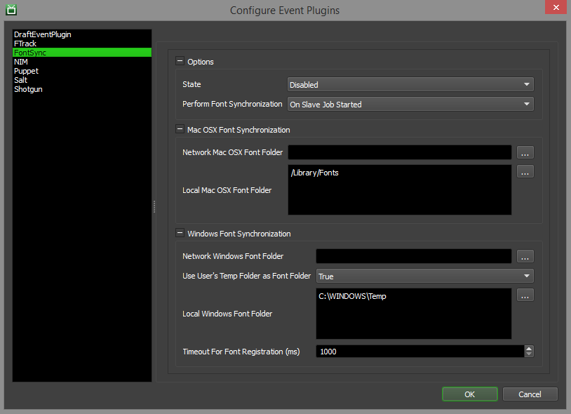

FontSync¶
Overview¶
The FontSync event plugin can be used to synchronize fonts from a central server to Windows and macOS render nodes. It can be configured to synchronize the fonts when the Worker application is launched on the render node, or before each job the Worker renders.
The font folder on the central server must be accessible by the render nodes, and it is recommended to use separate folders for Windows and macOS fonts.
Setup¶
Some configuration is needed to use the FontSync event plugin. To access these settings, simply enter Power User mode and select Tools -> Configure Events form the Monitor’s menu. From there, select the FontSync entry from the list on the left.
Options
This section contains general high-level options that control the behaviour of the Deadline’s FontSync integration.
State: There are three different states that an Event Plugin can be in: Global Enabled, Opt-In, and Disabled. In order for this feature to function properly, the State must be set to either Global Enabled or Opt-In. Note that if this plugin is in the Opt-In state, the jobs that want to run this plugin must opt into FontSync.
Perform Font Synchronization: If the event plugin should synchronize fonts when a Worker starts up, or before each job it renders.
macOS Font Synchronization Options
Network macOS Font Folder: The network macOS font folder used for synchronization.
Local macOS Font Folder: The local macOS font folder to synchronize with the network font folder. Enter alternative paths on separate lines.
Windows Font Synchronization Options
Network Windows Font Folder: The network Windows font folder used for synchronization.
Use User’s Temp Folder as Font Folder: If enabled, the fonts will be copied to a DeadlineFonts folder in the current user’s TEMP folder. Using this option avoids having to create a font folder on each machine, and avoids permission issues.
Local Windows Font Folder: The local Windows font folder to synchronize with the network font folder. Enter alternative paths on separate lines. This is ignored if Use User’s Temp Folder as Font Folder is enabled.
Timeout For Font Registration (ms): The amount of milliseconds the event plugin will wait before timing out per font when registering fonts.
Skip Existing Fonts: If enabled, only fonts that do not exist on the machine are copied over. This can improve performance, but if an existing font is modified in the network folder, it will not by synchronized to the machine.
FAQ¶
Is font synchronization supported in Deadline?
Yes.
Are older Type-1/Postscript font files supported by the FontSync plugin?
Error Messages and Meanings¶
This is a collection of known FontSync error messages and their meanings, as well as possible solutions. We want to keep this list as up to date as possible, so if you run into an error message that isn’t listed here, please contact Deadline Support and let us know.
Currently, no error messages have been reported for this event plugin.

{kind=link}